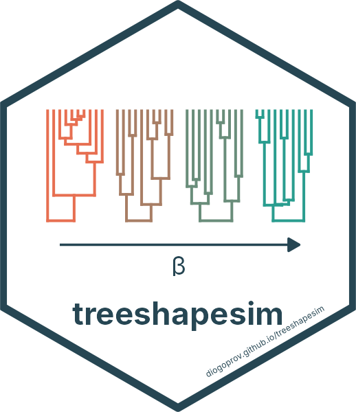

Ultrametric trees with given imbalance and branching-time parameters
Source:R/simulate.R
sim_tree_shape.RdDraws the topology with rtopology_beta() and the internode intervals with
intervals_lineage_rate(), and combines them with assign_ages(). The
topology and the intervals are drawn independently, the gamma statistic
depends only on the intervals and the Colless index only on the topology, so
for a given n the realized gamma depends only on c and the realized
Colless index only on beta. To draw trees near target values of both
statistics, see sim_tree_target().
Value
With nsim = 1, a binary, ultrametric phylo object with root
depth root_age; otherwise a multiPhylo object with nsim such trees.